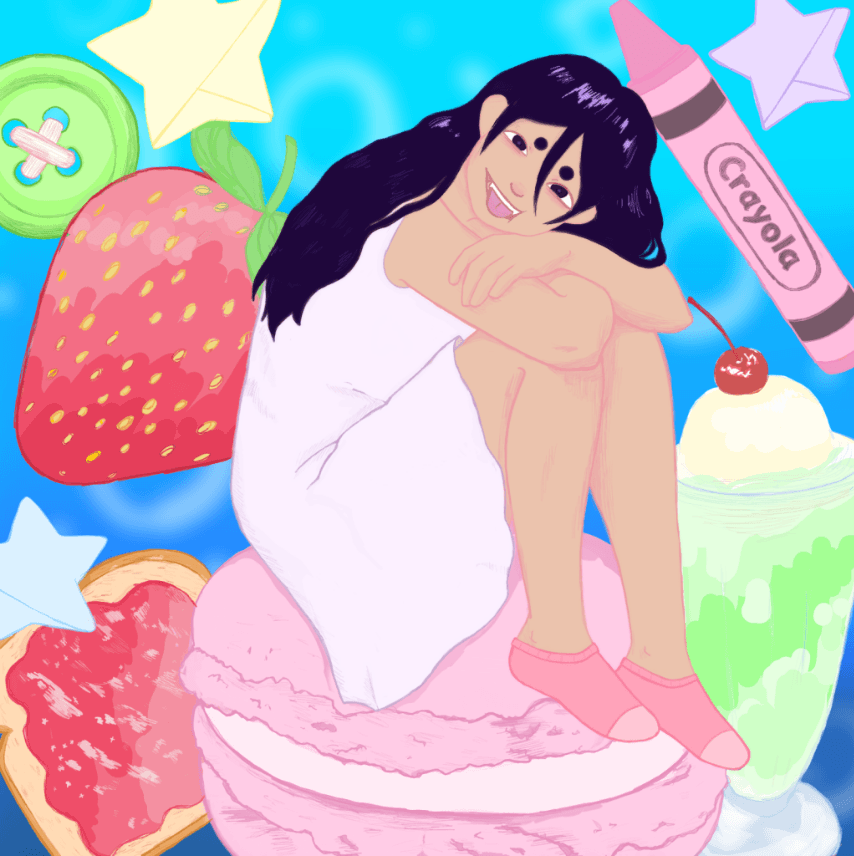
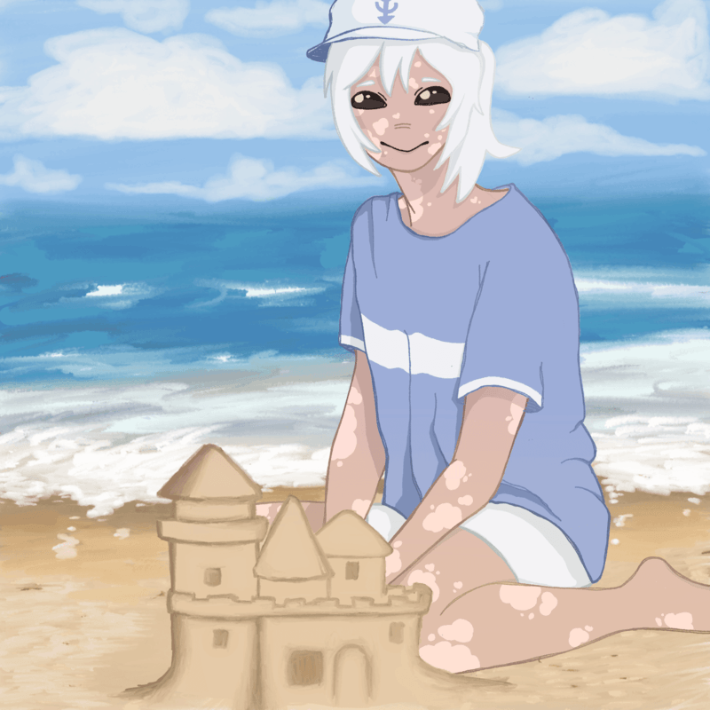
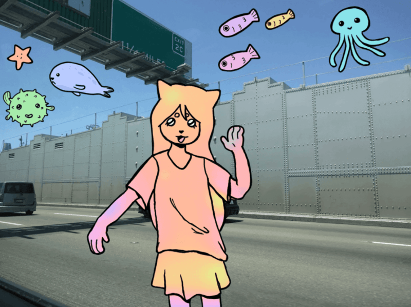
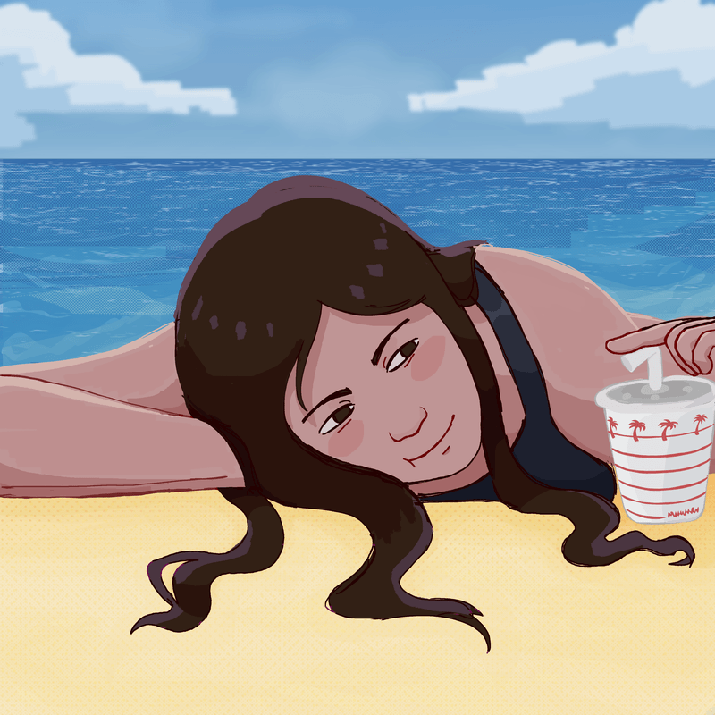
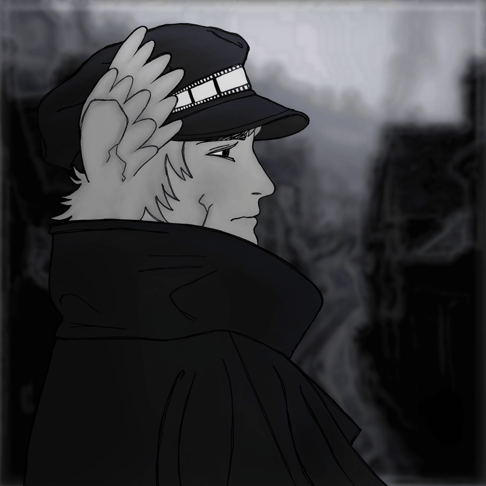
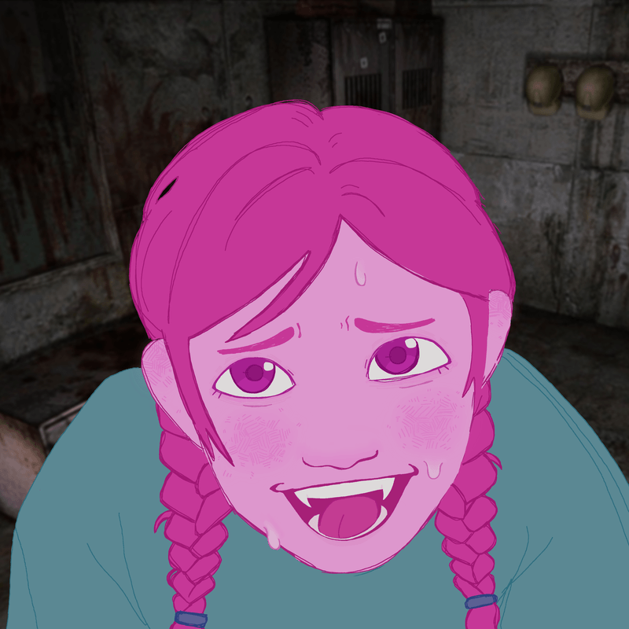

⋆About me
I like making art because I love looking at art. I love getting to create things which are deeply pleasing to my own eye. Most of my work is created to be consumed by me and me only.
My work


confectionery lass
super styleized self portait with all my favorite desserts. i love how desserts look in art and that was the main inspo


waterfront castle
i love going to the beach so much and even though i've never built a sandcastle, i think the very idea of them is very novel.


roadside attraction
i like looking out the window on roadtrips, it's very inspiring. i also really like aquatic animals but i never get to see them so i'd like to imagine them in the sky since it's blue and vast like they ocean.

tanning by the coast
self portrait of me at the beach. this was after i went out on my own for the first time without my parents. i fell down a small cliff that day.

mr.detective
I made this for artfight 2026. i usually don't draw men, i think women are just nicer to look at. i made an exception this time.

roseate
This is another self portrait but of my old persona. i'll be honest i don't know why i picked this expression or background...
contact me
Email:andrea.tostado@sjsu.edu